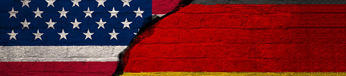
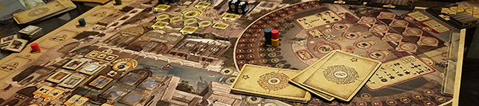
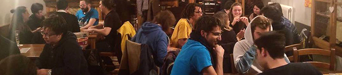

Enciclopedia Minima della Scienza Ludica
Una guida onnicomprensiva di tutto lo Scibile da Tavolo, più o meno
C’è tutto un mondo di giochi, là fuori.
Un mondo vasto, sfaccettato e splendido, in continua evoluzione.
E in quel mondo, ci sono tante cose, tutte diverse, tanti piccoli tesori da scoprire.
Un tempo, erano roba sconosciuta: i giochi erano pochi, i giocatori anche. I ludopati erano tutti esploratori, pochi monomaniaci curiosi che si facevano avanti per seguire una passione cieca.
I giochi erano strani e anomali, allora, e tutti di difficile classificazione, e questo era ben prima che se ne pubblicassero centinaia e centinaia ogni anno, molto tempo prima che i monomaniaci si radunassero in associazioni ludiche e cercassero di far sapere della loro esistenza.
Adesso, forse anche per merito di quei folli, il mondo di fuori è stato quasi del tutto esplorato: i nostri tesori sono ovunque. Tesori in scatole grandi, tesori in scatole piccole, sepolti in cartonati pieni di tessere e fustelle, di pedine e meeple, arricchiti di manuali e buste e altre bellissime chincaglierie. Tesori che si intavolano tutti insieme, con altra gente appassionata, che fino a poco tempo fa magari non avrebbe avuto modo di sapere quanto possa essere bello sedersi a giocare e divertirsi tutti insieme, vis a vis, e scherzare fino a tarda notte.
Ma non serve illuderci: del nostro piccolo mondo fantastico, non ne sappiamo ancora un granché.
Anche se la mappa è stata tracciata, siamo ancora pionieri, gente che va avanti con mille dubbi, guidati solo dalla fede che ogni gioco sarà bello come il precedente.
E allora non c’è da sorprendersi se, ora come ora, non esiste ancora una Scienza Ludica, con tutte le sue definizioni e categorizzazioni. C’è sicuramente un gergo certo, un glossario condiviso; ma i nuovi giocatori è bene che lo sappiano fin da subito: solo questo c’è, di certo e condiviso.
Parlare di giochi da tavolo, con queste premesse, può risultare ancora difficoltoso. All’atto pratico, informarsi sulle ultime novità pubblicate, farsi consigliare da qualcuno un titolo simile al proprio gioco preferito, o anche solo comunicare senza ambiguità con un altro appassionato, può risultare frustrante e inefficace.
Quello che segue vuole essere un prontuario utile a questo genere di evenienze; un espediente, sebbene senza pretese, per facilitarsi la vita e magari per capire quanto è profondo e diverso il nostro bellissimo hobby.
Categorie Generali

Ogni gioco può essere distinto in due grandi categorie generali, che ne definiscono la filosofia e, qualche volta, la provenienza geografica:
- L'Eurogame, conosciuto anche come German, è un tipo di gioco distintamente teutonico, di solito semplice nei materiali, pensato per giocatori che intendono mettere alla prova le proprie capacità mentali e strategiche. Il gioco "alla tedesca" non è quasi mai dipendente dalla fortuna, che comunque non è mai il motore portante della partita, e si affida completamente all'abilità del giocatore di affermarsi su tutti gli altri giocatori con il proprio modo di giocare. È un tipo di gioco razionale, lineare, di solito con pochi segreti, in cui tutto può essere previsto e pianificato, dove non si interagisce tanto con altri giocatori, quanto col gioco stesso. Alcuni esempi di Eurogame includono: "I Viaggi di Marco Polo", "Coloni di Catan", "Goa".
- L'Ameritrash, conosciuto anche con il nome politicamente corretto di "Thematic Game" (o semplicemente American) è un tipo di gioco, di solito di matrice statunitense, che punta molto sulla grafica, sulle meccaniche appariscenti, sull'opportunismo e sul conflitto diretto con gli altri giocatori. L'interazione è massima, le puntate sono alte e le manovre da eseguire sono totalizzanti, il tutto mentre i bluff, i segreti e i trabocchetti la fanno da padrona. Anche negli Ameritrash dove si collabora, alla fine c'è sempre qualcosa che contribuisce a movimentare l'azione. Alcuni esempi? "Blood Rage", "Le Case della Follia", "Talisman".
L'una e l'altra categoria sono ovviamente degli indici generali. Esistono moltitudini di giochi che non rientrano perfettamente in nessuna delle categorie (es. "Scarabeo"), o che si possono considerare un misto tra loro. In tutti questi casi, si preferisce riferirsi al gioco direttamente guardando alle sue meccaniche e stili, più che alla categoria cui appartiene.
Meccaniche

Si parla in questo caso delle specifiche dinamiche che movimentano le partite. Per "meccanica" si intende quindi il complesso di azioni e interazioni che rappresentano il metodo (o uno dei metodi) per racimolare un vantaggio sugli avversari, per accumulare punti o, semplicemente, per vincere la partita. Detto in parole povere, le meccaniche indicano come si gioca a grandi linee (e le regole vere e proprie definiscono la cosa nello specifico). Chiaramente, un gioco può basarsi su una sola meccanica, ma più spesso fa uso di diverse meccaniche interconnesse. Non è necessario che una sia prevalente sulle altre, ma di solito è proprio questo il caso (ed è il motivo per cui un gioco che magari ha elementi di diverse meccaniche è comunque riferito come un gioco appartenente a una sola in particolare).
Tra le molte, le principali meccaniche sono, in ordine sparso:
- Il Worker e Tile Placement (o anche "piazzamento lavoratori/tessere"), in cui il vantaggio è ottenuto piazzando delle pedine e/o delle tessere in modo tale da ottenere punti o eseguire azioni che permettono a loro volta di ottenere punti o altri generi di benefici. L'esempio per antonomasia di gioco che si affida alla meccanica Tile Placement è "Carcassonne". Se parliamo invece di Worker Placement, ottimi esempi sono "Caylus", "Agricola" e "Stone Age".
- Il Network Building, dove il vantaggio è conseguito predisponendo connessioni tra punti critici, non per forza fissi, secondo particolari modalità. Di solito, ad importare sono non solo il punto di arrivo e quello di partenza, ma anche i nodi intermedi e le intersezioni tra questi. Esempi popolari includono "Hansa Teutonica" e "Ticket to Ride", ma anche giochi come "I Coloni di Catan" ne fanno uso.
- La Maggioranza, dove il vantaggio è naturalmente dato dal maggior numero di pedine (o risorse, o altro) in una data area o sotto-area rispetto ad ogni avversario. Qualche volta, le aree sono di valore e uso diversi, ed è importante la loro posizione e la loro reciproca vicinanza. Se ad essere rilevante non è tanto la maggioranza interna ad un'area singola, ma la maggioranza data dalla presenza in una porzione di area più ampia (mentre le singole piccole aree possono ospitare un solo giocatore), si parla invece più propriamente di Controllo Territorio. Fanno uso di queste meccaniche, congiuntamente o disgiuntamente, in modo più o meno articolato, giochi come "Mexica", "Twilight Struggle" e "Scythe".
- Il Deck Building ("costruzione mazzo"), cioè l'acquisizione di carte dai poteri particolari volta a creare un proprio mazzo che permetta di raggiungere gli obiettivi del gioco in modo efficiente e performante. Si tratta di una sottoinsieme molto popolare di quei giochi che premiano la costruzione di sistemi efficienti. Un esempio molto famoso è "Dominion".
- L'uso di dinamiche economiche, quali gli investimenti, la manipolazione del mercato, lo scambio e la gestione del rischio al fine di ottenere punti per vincere. Molto famoso è il classico "I Coloni di Catan", ma di questa categoria rientra anche il tanto amato/odiato "Monopoli".
- Simile al precedente (e spesso ad esso congiunto), l'uso di dinamiche diplomatiche, come la negoziazione, la contrattualistica, i bluff e la manipolazione psicologica volta al conseguimento di un obiettivo. L'esempio più puro è il sempreverde "Diplomacy". Un esempio più recente è invece "Sheriff of Nottingham".
- La strategia logistica pura e semplice, intesa come gioco di manovre e contromanovre riferite alle mosse di un avversario di solito in vena simulativa di guerre, battaglie, campagne militari, e volta ad azzerarne completamente l'esistenza. Tutti i Wargames che si possano definire tali fanno uso di questa meccanica.
- La destrezza pura e semplice, sia essa fisica (di solito in forma di precisione e agilità), o mentale e culturale (di cui i quiz) o psicologica. In generale, un gioco di destrezza è un gioco che mette alla prova abilità possedute dal giocatore già precedentemente all'inizio del gioco e indipendentemente dalle sue regole, e lo invita a darne sfoggio. Di questa categoria fanno parte giochi dove si manipolano oggetti materialmente, come "Dungeon Dice" o "Jungle Speed", dove si risponde a domande ("Trivial Pursuit") o dove si ordinano e si rapportano tra loro nozioni e concetti ("Scarabeo", "Timeline").
- Similmente alla precedente, i giochi che si basano sulla creatività richiedono ai giocatori di dimostrare la loro abilità a gestire gli imprevisti attraverso l'invenzione di situazioni e scenari che soddisfino i criteri richiesti (come, ad esempio, far ridere o pensare). Di questo tipo sono giochi come "C'era una volta", "The Great Persuader" o "Sì, Oscuro Signore".
- Molto simili sono i giochi di deduzione, dove invece l'enfasi non è posta sulla capacità di improvvisare, ma su quella di trarre le logiche conseguenza a partire da una base di dati precedentemente fornita. Sono giochi di deduzione titoli come "Cluedo", "When I Dream", "Dixit" e "Sherlock Holmes", come la gran maggior parte delle escape room.
- Esistono poi tutta una serie di giochi che si basano su meccaniche molto semplici e lineari, di solito personalizzate e senza troppi fronzoli, di pura strategia. È questa la categoria dei cosiddetti astratti, quali sono gli Scacchi, il Go, "Hive", "Santorini" e "Onitama".
Materiali
Altrettanto importanti per definire un gioco possono poi essere i materiali impiegati, che a loro volta creano generi particolari. Classico esempio sono i Giochi di Carte (siano esse collezionabili, come in "Magic: The Gathering" o meno, come in "Netrunner") o i Giochi di Miniature (di solito in vena di Wargame, come in "Warhammer 40.000"). A volte un gioco può essere definito proprio dal fatto di non impiegare nessun materiale il particolare oltre l'immaginazione, se non come semplice ausilio grafico o mnemonico. Tipico esempio in questo caso è il Gioco di Ruolo, dove i giocatori fingono di essere personaggi in un mondo di fantasia, e interagiscono tra loro e con altri personaggi della storia che stanno formando insieme. Principe dei Giochi di Ruolo è ovviamente il classico "Dungeons & Dragons".
Tono

Infine, date particolari meccaniche, non è detto che le stesse siano gestite sempre nello stesso modo: è infatti possibile che le stesse siano organizzate in modo da privilegiare il divertimento puro di tutti i giocatori sulla pura strategia, o per risultare volutamente accessibili (o no) a certi tipi di giocatori.
Dunque, molto spesso per capire a chi sia veramente diretto un certo titolo, è determinante passare attraverso l’esame del suo tono.
Tra i vari, si indicano:
- I giochi cosiddetti Familiari, che sono pensati per essere apprezzati da giocatori di ogni età ed estrazione, in genere di età e preparazione differenti. Puntano spesso a far passare un buon quarto d'ora, senza risultare mai troppo impegnativi. Fanno parte di questa categoria i giochi introduttivi come "Ticket to Ride".
- I Party Game potranno non essere adatti a tutti, ma sono certamente adatti a chi vuole farsi quattro risate. Sono i giochi "caciaroni", senza pretese, dove il divertimento viene dal comportamento (spesso volutamente sciocco) dei giocatori e che promuovono l'interazione sociale tra di loro. Sono Party Game giochi come "Happy Salmon", "Vudù" e "Taboo".
- I giochi Cooperativi implicano la collaborazione tra tutti i giocatori contro il gioco stesso. In questi giochi, si vince e si perde tutti assieme. Naturalmente, si tratta di giochi dove è molto importante l'affinità tra i partecipanti, o che comunque si propongono di crearla. Sono Cooperativi "Magic Maze" e "Pandemia".
- I Filler o "riempitivi" sono giochi veloci, da massimo un quarto d'ora, che in genere sono pensati per essere portati con sé per colmare dei vuoti, magari anche tra un turno e l'altro di un gioco impegnativo. Sono giochi non per forza semplici, ma sono sempre giochi intensi che si risolvono in poche scelte decisive. Sono filler giochi come "Coloretto", "Fluxx" e "The Game".